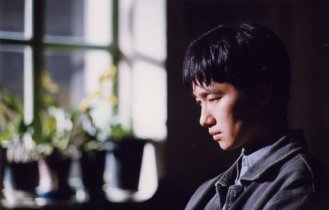
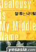

|
|
12. Juni 2006
질투는 나의 힘 Jealousy is My Middle Name (Kor 2003)
 "Jealousy Is My Middle Name" ist eine dieser kleinen, feinen Festivalperlen, die sich fest in die Köpfe einige Kritiker einbrennen, die dann hellauf begeistert sind, wenn Kollegen den auch kennen, und noch mehr, wenn andere Filmemacher anfangen diesen Film zu zitieren. In diesem Fall setzt sich das Paar in dem Film "A Good Lawyers Wife" ins Kino und schaut sich "Jealousy Is My Middle Name" an. Was kann einem Regie-Erstling besseres passieren? Die junge Park Chan-ok hat offensichtlich bei ihrem Lehrer Hong Sang-soo viel gelernt, bringt aber die weibliche Sicht in das typisch koreanische Liebesdreieck. Die Eifersucht ist eine positive, stärkende Kraft. Ich liebe diesen Film, und hab ihn sicher über 10 mal gesehen. --Reini Urban
Lee Won-Sang schließt seine Dissertation in Literatur ab und plant, nach England zu reisen. Da verlässt ihn seine Freundin wegen eines anderen Mannes. Als er erfährt, dass es sich um den älteren Zeitschriftenherausgeber Yun-Sik handelt, bewirbt er sich bei ihm um einen Job, den er auch erhält. Yun-Sik sieht sich allmählich als Mentor Won-Sangs, der sein Schützling wird und dem er Vertrauen schenkt.
Jealousy Is My Middle Name folgt den Entscheidungen und dem Schicksal der Figuren in einer äußerst bedächtigen und eigenartigen dramatischen Bewegung: Lees Eifersucht ist es, die in dieser gelungenen Charakterstudie für verwickelte Spannungsbögen sorgt. Die komplizierten Beziehungen zwischen den Personen sind so subtil und fein geschildert, dass wir an den tatsächlichen Motivationen der Figuren zu zweifeln beginnen. Zudem sind die Dialoge meisterhaft geschrieben, eine Ausnahme bei einem Erstling, die von großer Reife und einer vollendeten Beobachtungsgabe zeugt. --viennale
How is fate leading the two men who always fall for the same woman? Won-sang (Park Hae-Il) has parted from his girlfriend after he found out that she was going out with a married man, Yun-sik (Mun Seong-geun). Then Won-sang got a job in Yun-sik's magazine company and met the girl of his dreams, the photographer Sung-yeon (Bae Jong-ok). Coincidentally and unfortunately, Yun-sik also has his eyes on her
A soft-spoken, fastidious graduate student Won-sang (Pak Hae-il, Waikiki Brothers, Memories of Murder) goes through a bad break-up with his girlfriend. He gets a job at a small but prestigious literary magazine, and is attracted to the magazine's part-time photographer, a permanently disheveled but freewheeling veterinarian Seong-yeon (Bae Jong-ok). To his consternation, however, he finds out that his boss Han Yun-sik (Moon Seong-keun, Green Fish, Virgin Stripped Bare by Her Bachelors), the outspoken, charismatic and womanizing editor-in-chief, was responsible for snatching his girlfriend away. Han has now set his eyes on Seong-yeon. Won-sang tries to drive a wedge between the two, but in the process, his relationships with both Yun-sik and Seong-yeon grow more and more intricate. Meanwhile, Won-sang becomes an object of clumsy courtship by his young landlady, Hye-ok (Seo Yeong-hee), who is frightened that the allegedly hereditary mental illness in her family will claim her.
Upon its release, Jealousy was instantly compared to Hong Sang-soo films by the Korean critics. They pointed to meticulous observations of the everyday minutiae, naturalistic performances of the actors, restrained editing and camera movement and other common features. While these similarities do exist, in tone and in characterization Jealousy is as different from Hong's films as John Cassavettes is from Ingmar Bergman. First-time director Pak Chan-ok (not to be confused with Pak Chan-wook, the director of Old Boy and JSA) chooses to gradually reveal the character's inner colors by piling up vignettes upon one another. The film's narrative is nowhere nearly as tightly designed as a Hong Sang-soo film. The engine of the narrative is its characters, all seemingly "normal" people but always slightly on the edge, as if trying to prevent by ignoring sudden outbursts of frustrated emotions. The movie treads the middle ground between the naturalistic "slice of life" observations one the one hand, and a drama tracing the arc of the relationships on the other. --Kyu Hyun Kim, koreanfilm.org
Eines Tages beschloss ich, einen Film zu drehen, bevor meine Jugend vorbei sein würde. Seit diesem Tag verbrachte ich die Zeit damit, mir zu überlegen, wie die Charaktere für meinen ersten Film aussehen könnten. Die Hauptperson des Films ist etwas naiv, unschuldig und ursprünglich tugendhaft. Er geht jedem Konflikt aus dem Weg, anstatt dass er sich ihm stellt. Er vermisst etwas. Dieser Mangel kann ein gefährliches Gefühl hervorrufen, das zu einem tragischen Ende führen kann, aber gleichzeitig auch ein großartiges Gefühl, das einen beflügelt. Deshalb dachte ich an «Eifersucht» für den Titel des Films. Jealousy Is My Middle Name ist ein anderer Name für «Mangel». Die Schlüsselpunkte des Films sind die Psychologie und die innere Bewegung der Figuren. (Park Chan-Ok)
Festivals und Awards:
Tiger Award (International Film Festival Rotterdam 2002),
Best Script Winner (Blue Dragon Film Awards 2003),
New Currents Award Winner (PUSAN International Film Festival 2002)
Viennale 2003
Kor 2003, B+R: Park Chan-ok 박찬옥,
D: Park Hae-il 박해일, Bae Jong-ok 배종옥, Moon Seong-geun 문성근, Seo Yeong-hie. 124min, kor. meUT
19:30 Uhr, Space04 Kunsthaus Graz, € 5.-